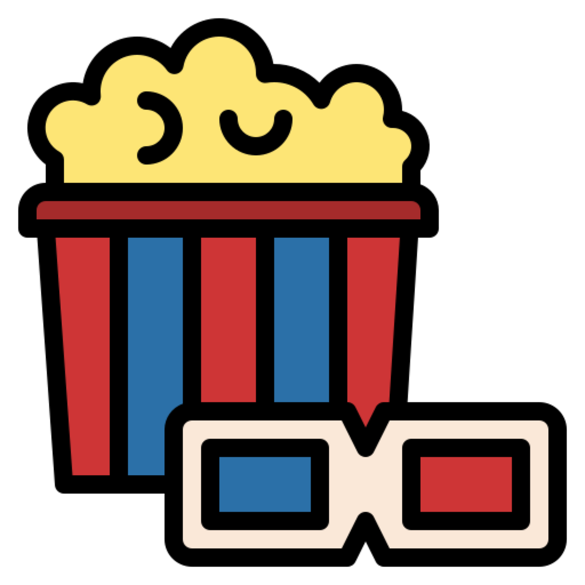

Multiple pages
Separate screens for browsing, searching, title details and your lists.

A React Native app for discovering movies and TV shows and keeping track of what to watch next.
Watchable started from a personal need: one place to discover movies, check what's trending and keep track of what to watch next. It became a full app when I realized other people have the same problem.
It pulls live data from the TMDB database. Users can save movies and TV shows to a watch-later list, mark them as watched and add their own comments. Everything is stored on the device, so no account is needed.
Separate screens for browsing, searching, title details and your lists.
Save movies and TV shows to a list for later.
Find any movie or TV show by name.
Titles, details and trending lists come straight from the TMDB database.
Mark titles as watched and add your own comments.
Get notified when an upcoming title is released.
Scroll sideways to see each screen.